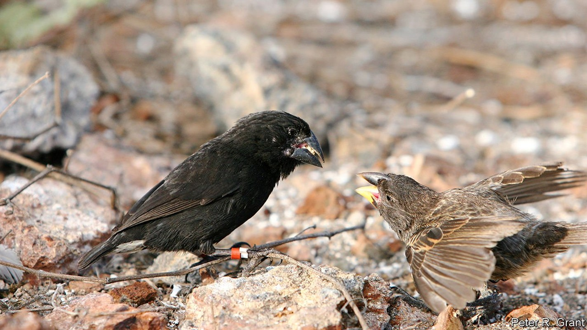
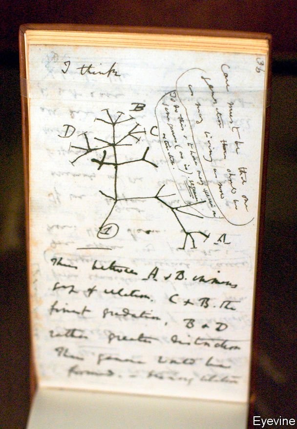
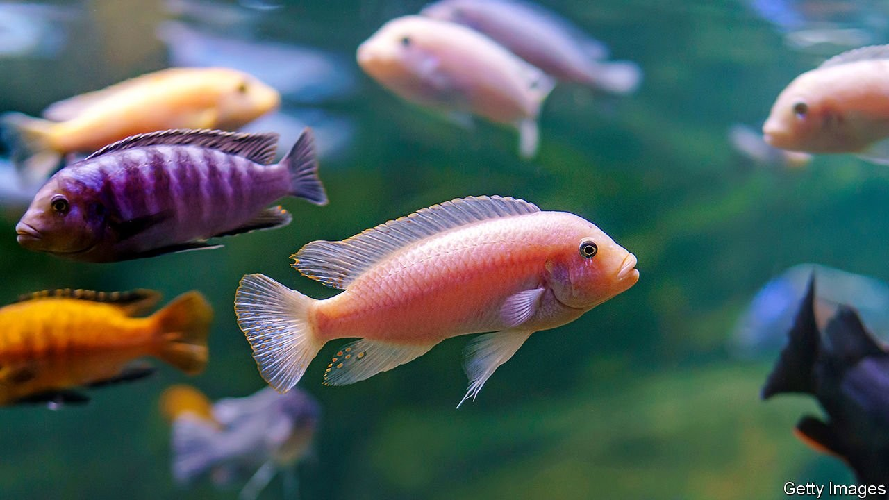
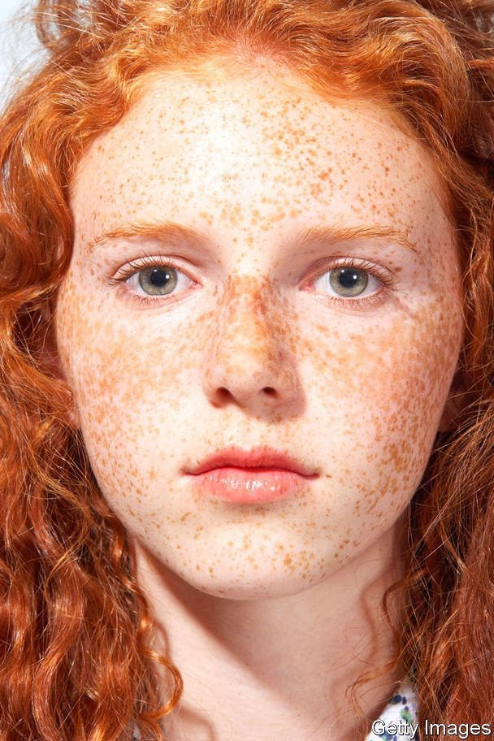

The origin of species is more complex than Darwin envisaged

IN 1981 PETER and Rosemary Grant, a husband-and-wife team of evolutionary biologists, spotted something odd on Daphne Major. Every year for the previous decade they had travelled from Princeton University to this island in the Galápagos, to study its three endemic tanager species, part of a group known colloquially as “Darwin’s finches”. On this occasion their eyes were drawn to an unusual male that sported dark feathers and sang a unique song. Genetic analysis later identified him as a large cactus finch, probably blown in from Española, another part of the archipelago that is over 100km away.
Listen to this story.Enjoy more audio and podcasts on iOS or Android.
Listen to this story
Save time by listening to our audio articles as you multitask
Intrigued, the Grants followed the castaway as he explored his new home. They watched him mate with a local female medium ground finch. That produced five fit, healthy offspring. Those offspring were also surprisingly sexually selective. A single male excepted, they and their descendants mated only among themselves—and they have continued to do so ever since.
Despite this heavy inbreeding, the hybrids (two of which are pictured above) have been successful. They have carved out a niche in which they use their size and their deep beaks to exploit the large woody fruits of the Jamaican feverplant, which grows locally. They have, to all intents and purposes, become another species of Darwin finch, of which 13 were previously recognised. Though they do not yet have a Latinised scientific name, they are known to all as the “Big Bird” lineage.
Heretical thinking
This story would once have been considered deeply implausible. Evolution’s orthodox narrative does not suggest that hybridisation is how new animal species emerge. But, as genetic testing has proliferated, biologists have been confronted with an unexpected fact. Hybrids are not an evolutionary bug. They are a feature.
That knowledge is changing the way people think about evolution. The neat family trees envisaged by Charles Darwin in one of his early notebooks (see picture below) are turning into webs, and the primacy of mutation in generating the variation which natural selection then winnows is being challenged. The influx of genes accompanying hybridisation creates such variation too—and the harder people look, the more important that seems to get. Hybridisation also offers shortcuts on the long march to speciation that do not depend on natural selection at all. As the example of the Big Bird lineage shows, instead of taking millennia to emerge, a new species can appear almost overnight.

As Darwin saw it
In truth, all this had already been recognised for simple organisms like bacteria. These exchange genes promiscuously between both more and less related individuals. But bacteria were unknown when Darwin came up with natural selection, and, ever since then, the subject of speciation has been dominated by examples drawn from animals and plants. To recognise that what is true for bacteria is also true for these multicellular organisms has profound implications, not least for how human beings understand their own origins. It seems appropriate, then, that the birds whose diversity helped inspire Darwin still have evolutionary tales to tell.
The conventional view of evolution is that mutations happen at random. Maladaptive ones are then eliminated by competitive pressure while adaptive ones proliferate. The result, over long periods of time and assisted by populations sometimes being split up by external circumstances, is change which eventually crystallises into new and separate species.
That process does leave the door open to hybrids. The genomes of closely related species may remain sufficiently similar to produce viable offspring. But these genes often fit together less well than those of parents from the same species. As a consequence, even viable hybrids are frequently infertile (think mules) and are also at higher risk of developmental and other types of illnesses. In fact, infertility in male hybrids is so common that it has a name—Haldane’s rule. This sort of thing was enough to persuade most of Darwin’s 20th-century disciples that the need to avoid hybridisation was actually a driving force which caused natural selection to erect reproductive barriers between incipient species, and thus encouraged speciation.
There is, though, another way of looking at hybridisation. Mixing the traits of two parent species might actually leave their hybrid offspring better off. This is called hybrid vigour, or heterosis. The interplay of two species’ genes can even produce traits displayed by neither parent. This is known as transgressive segregation and the resulting hybrid may be surprisingly well adapted to a completely new niche, as was the case with the Big Birds.
Both the maleficent and beneficent effects of hybridisation are real. The question is, which wins out more often in practice? In plants, it is frequently the beneficent. This is a consequence of plants’ unusually malleable genetics. The nuclear genomes of complex organisms (animals, plants, fungi and single-celled organisms such as amoebae) are divided into bundles of DNA called chromosomes. Such organisms are generally either haploid or diploid, meaning that each cell nucleus contains either one or two copies of every chromosome. Human beings are diploid. They have 23 chromosomal pairs, for a total of 46 individual chromosomes. But there are exceptions. Plants, for instance, are frequently polyploid—meaning that each nucleus contains copies in greater multiples than two. To take one example, Californian coastal redwoods have six copies. Since redwood cell nuclei have 11 distinct types of chromosome, they host a total of 66 chromosomes altogether.
Sometimes, polyploidy is a result of an organism’s genome spontaneously doubling. Often, though, it is a consequence of hybridisation, with the chromosomes of both parents ending up in a single nucleus. However it arises, polyploidy provides spare copies of genes for natural selection to work on while other versions of them continue with their original function. And if it is also the result of hybridisation, it brings the additional possibilities of heterosis and transgressive segregation.
On top of this, by changing an organism’s chromosome count polyploidy has another pertinent effect. It creates an instant barrier to breeding with either parent species. That gives a new, incipient species a chance to establish itself without being reabsorbed into one of the parental populations. The results can be spectacular. Recent evidence suggests, for example, that hybridisation between two plant species in the distant past, followed by a simple doubling of the number of chromosomes in their offspring, may be responsible for much of the extraordinary diversity in flowering plants that is seen today.
Plants seem to be easy beneficiaries of hybridisation. For many animals, however—and for mammals in particular—extra chromosomes serve not to enhance things, but to disrupt them. Why, is not completely clear. Cell division in animals seems more easily confounded by superfluous chromosomes than it is in plants, so this may be a factor. Plants also have simpler cells, which are more able to accommodate extra chromosomes. Whatever the details, animal hybrids appear to feel the effects of genetic incompatibility far more acutely than do plants, and are therefore less able to benefit from heterosis. Evolutionary biologists therefore assumed for a long time that hybridisation played a negligible role in animal evolution—and there was little evidence to suggest otherwise.
Advances in DNA sequencing have changed that by letting people look under the bonnet of evolutionary history. This has uncovered a steady trickle of animals breathed into life entirely by hybrid speciation. They include some familiar names. The European bison, for instance, is the result of hybridisation, over 120,000 years ago, between two now extinct species—the ice-age steppe bison and the auroch. The latter were the wild antecedents of modern domestic cattle, and survived in Jaktorow Forest, in Poland, until 1627.
Something similar is true of the Atlantic Clymene dolphin. Genetic analysis has revealed that this cetacean, which roams the briny between west Africa, Brazil and the Gulf of Mexico, owes its existence to a hybridisation that happened between two globe-trotting others, the striped dolphin and the spinner dolphin.
At least one hybrid animal, moreover, traces its ancestry to three species. Genetic analysis shows that Artibeus schwartzi, a Caribbean fruit bat, is a result of hybridisation, within the past 30,000 years, of the Jamaican fruit bat (Artibeus jamaicensis), the South American flat-faced fruit-eating bat (Artibeus planirostris) and a third, as yet unidentified animal, which researchers speculate may now be extinct.
A different kettle of fish
It also appears that, as in the case of flowering plants, hybridisation can fuel explosive radiations of novel animals. The best-known example is the case of the cichlids of Africa’s Great Lakes—particularly Lake Victoria, Lake Tanganyika and Lake Malawi. Great Lake cichlids are a group of thousands of closely related fish, famous for their panoply of shapes, sizes and colours (see picture). Each is adapted to a different depth and ecological niche.

Gone fishing
Cichlids’ evolutionary history has long puzzled biologists. Lake Victoria, in particular, comes and goes with the climate. Its current instantiation is less than 15,000 years old. In evolutionary terms this is the blink of an eye, but in that time the lake’s cichlids have diversified into more than 500 species.
The reason is hybridisation. Using genetic analysis to place Lake Victoria’s cichlids within the broader cichlid family tree, researchers have discovered that they descend from a tryst between two distinct parental lineages, one that swam in the Congo and the other in the Nile.
The value of being such a genetic mosaic is apparent from the history of one of the best-studied cichlid genes, which encodes a protein called long-wave-sensitive opsin that is found in the retina of the eye. This protein determines the eye’s sensitivity to red light. That matters because red-light levels decline steeply in deeper water. Consequently, fish which live at different depths need eyes that are tuned differently from one another.
The cichlid lineage from the Congo had eyes which were optimised for clear, shallow water. Nile-lineage vision was more attuned to the deep and murky. Hybrids were able to chop and change these genetic variants to produce a range of sensitivities to light. This let them colonise the full depth of the water column in Lake Victoria as it developed. The new lake, for its part, offered the cichlids a host of empty ecological niches to fill. The result was a sudden and explosive process dubbed “combinatorial speciation”.
Elsewhere in the natural world, combinatorial speciation seems to have contributed to the striking diversity of Sporophila, a genus of 41 Neotropical songbirds, and of the munias, mannikins and silverbills of the genus Lonchura, a group of 31 estrildid finches that ranges across Africa and South-East Asia. Nor is it just in vertebrates that this phenomenon rears its head. Heliconius, a genus of 39 flamboyant New World butterflies, also owes its eye-catching diversity to combinatorial speciation.
Raining cats, dogs and bears
These findings muddy Darwin’s concept of speciation as a slow and gradual process. Biologists now know that in the right circumstances, and with the help of hybridisation, new species can emerge and consolidate themselves in a mere handful of generations. That is an important amendment to evolutionary theory.
It is nevertheless true that, for animals, hybrid speciation in its full form remains rare. It requires an unlikely congruence of factors to keep a new hybrid population reproductively isolated from both parental species. The survival of the Galápagos Big Bird lineage, for example, involved physical isolation from one and strong sexual selection against the other.
More commonly, an incipient hybrid population is reabsorbed by one or both parental species before it can properly establish itself. The result is a percolation of genes from one species to another, rather than a full hybrid. This is called introgressive hybridisation—or, simply, introgression. DNA analysis of a long list of closely related animals shows that this version of hybridisation is far more common than the full form. It may even be ubiquitous.
The North American grey wolf, for example, owes its gene for melanism—the deep black fur displayed by some wolves—to introgression from domesticated dogs brought 14,000 years ago from Asia by America’s first human settlers. In wolves that inhabit forests this gene has undergone strong positive selection, suggesting it is adaptive. The most obvious explanation is that melanism provides better camouflage in the stygian depths of North America’s woodlands. Alternatively, female wolves may simply prefer their males tall, dark and handsome.
Panthera—the genus to which most big cats belong—is yet more impressive in the scope of its introgressive entanglement. It has five members: lions, tigers, leopards, snow leopards and jaguars. These have long been known to interbreed successfully in captivity, yielding crosses called ligers (lion x tiger), jaglions (jaguar x lion) and so on. But recent analysis shows that this has also happened in the wild. Researchers have identified at least six past introgressive episodes in the genus, with every member involved in at least one of them.
The most promiscuous of the five appears to be the lion. Gene variants have percolated between lions and tigers, lions and snow leopards, and lions and jaguars. There is also evidence that at least some of this gene flow has been adaptive. Three lion genes incorporated into jaguar genomes are known to have been strongly selected for. Two of these are involved in vision—specifically, they help guide the development of the optic nerve.
Genetic analysis also reveals a long history of hybridisation between polar bears and grizzlies, the largest of their brown bear cousins. It is not yet clear whether this has had adaptive value—but it may soon have a chance to prove itself. As climate change warms the polar bear’s Arctic home, the species may have to adjust rapidly. A splash of grizzly, a group used to more temperate climes, might help that happen.
The best-studied case of introgression in animals is, though, closer to home than wolves, big cats and bears. It is looking back at you from the mirror. The most up-to-date evidence suggests that Homo sapiens arose more than 315,000 years ago from gene flow between a series of interlinked population groups spread across Africa. Whether these populations were different enough to be considered distinct species is still debated. In the grasslands of the African Pleistocene, however, these ancestral groups were not alone. Their world was interspersed with a menagerie of other hominins. And interspecies mating seems to have been rife.
My family and other hominins
Several members of this human menagerie appear to have descended from Homo heidelbergensis, a species that spread through eastern and southern Africa around 700,000 years ago before crossing the Middle East into Europe and Asia. This species—a possible ancestor of the progenitor groups of Homo sapiens—also gave rise to at least two others, the Neanderthals (Homo neanderthalensis) and the Denisovans (Homo denisova). The former survived in Europe until 28,000 years ago, while the latter, an Asiatic group, lasted until roughly 50,000 years ago.
Other hominin species around at the time emerged directly from Homo erectus, a more primitive creature that was also the ancestor of Homo heidelbergensis and which, a million years beforehand, had blazed a similar transcontinental expansionary path to that of heidelbergensis. The local descendants of erectus were largely displaced by heidelbergensis when it arrived. But some holdouts survived in corners of the Old World that heidelbergensis never reached. These included the islands of Flores in Indonesia and Luzon in the Philippines. It was here that diminutive Homo floresiensis and Homo luzonensis—the island “hobbits”—lasted, like the Denisovans, until 50,000 years ago. There were probably isolated descendants of even older cousins too. At least one is known, Homo naledi, which predated the emergence of Homo erectus and still roamed southern Africa around 230,000 years ago.
This grand hominin circus ultimately came to an abrupt end. The record in Africa is opaque. But in Europe, Asia and Oceania it is clear that the arrival of modern humans coincided with a great vanishing of local hominins. Whether through disease, competition for scarce resources or perhaps even genocide, a few thousand years of contact with Homo sapiens was enough to snuff out every other hominin species.

Ghosts from a distant past
Even a few millennia, though, proved enough for Homo sapiens to get to know its cousins intimately. The record of these romantic entanglements remains in the DNA of almost everyone alive today. In 2010 a team led by Svante Pääbo of the Max Planck Institute’s campus in Leipzig published the first draft sequence of the Neanderthal genome. This led to the discovery that stretches of Neanderthal DNA constitute 1-4% of the modern human genome in all populations outside sub-Saharan Africa. That is consistent with a string of hybridising liaisons in Europe, the Middle East and Central Asia from around 65,000 years ago.
Neanderthal inheritance helped Homo sapiens adapt to the demands of the environments of these unfamiliar places. There seems to have been strong selection, for example, in favour of Neanderthal genes related to skin and hair growth. These include bnc 2, a gene linked to skin pigment and freckling that is still present in two-thirds of Europeans. There also appears to have been selection for Neanderthal-derived genes that deal with pathogens. Some govern the immune system’s ability to detect bacterial infections. Others encode proteins which interact with viruses.
The Denisovans, and their contribution to Homo sapiens, were another of Dr Pääbo’s discoveries. In 2009 one of his team sequenced DNA from a fossil finger bone excavated from Denisova cave in the Altai Mountains of Siberia. This bone turned out to belong to a previously unknown species that was then named after the cave it was found in. Physical specimens of this species remain rare. Examination of living people, however, reveals that stretches of Denisovan DNA make up 3-6% of the genome of contemporary Papuans, Aboriginal Australians and Melanesians. Many Chinese and Japanese also carry Denisovan DNA, albeit at lower rates.
As with Neanderthals, this inheritance has brought advantages. The Denisovan version of a gene called epas1 modulates production of red blood cells, which carry oxygen. This helps modern Tibetans to survive at high altitudes. Denisovan tbx 15 and wars 2 similarly help Inuit survive the harsh cold of the Arctic by regulating the amount of metabolic heat they produce.
We contain multitudes
That the Denisovans could lurk in modern human DNA yet leave so little fossil trace has caused geneticists to wonder what other ghosts they might find. The genomes of sub-Saharan Africans, in particular, reveal evidence of at least one further entanglement. In 2012 a genomic analysis of members of the Baka, Hadza and Sandawe, three groups of people of ancient lineage, suggested an archaic introgression. In 2016 a deeper analysis focused on the Baka pinpointed this to within the past 30,000 years. This February, a study of members of two other groups, the Yoruba and Mende, confirmed that between 2% and 19% of their genomes can be traced to an unidentified archaic species. Whether this is the same as the one which has contributed to the Baka, Hadza and Sandawe is unclear, but it appears to have diverged from the line leading directly to Homo sapiens not long before the Neanderthals and Denisovans—an African Neanderthal, if you will.
The same genetic tools have revealed deeper ghosts, too. Denisovans show signs of hybridisation with a “superarchaic” lineage—perhaps Homo erectus itself. This makes up 1% of the species’ genome. About 15% of this superarchaic inheritance has, in turn, been passed on to modern humans. There is even evidence of a minute genetic contribution to African populations by a similarly superarchaic relative.
To be human, then, is to be a multispecies mongrel. As the example of the big cats in particular shows, though, Homo sapiens is not, in this, an exception. Hybridisation, once seen as a spear-carrier in evolution’s grand theatre, is rapidly becoming a star of the show. Meanwhile, Darwin’s idea of a simple, universal family tree is relegated to the wings.
In its place, some experts now prefer the idea of a tangled bush of interconnected branches. But this, too, is an imperfect comparison. A more fitting analogy is a frayed rope. Species are braided from individual strands. Where evolution proceeds in an orthodox Darwinian manner, braids unravel, strands split and new species result. But the rope does not fray neatly. Filaments of introgression criss-cross from braid to braid and, occasionally, two tangle to form a new braid altogether. This is a more complex conception of evolutionary history, but also a richer one. Few things in life are simple—why should life itself be? ■